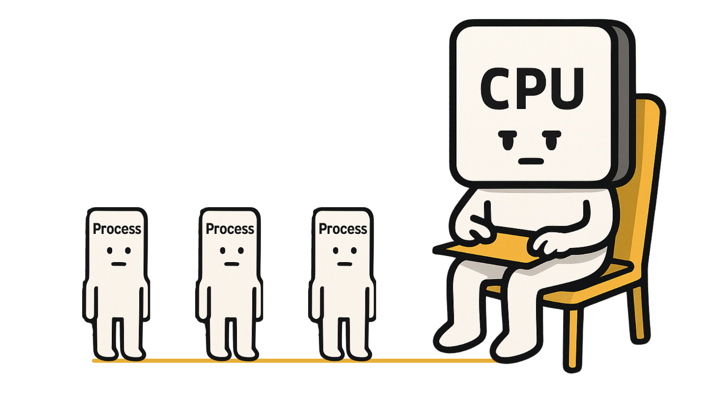

Once a process gets the CPU, it runs until completion — no interruption.
Non-preemptive LCFS (Last-Come-First-Serve) คือวิธีจัดตารางเวลาการทำงานของ CPU โดยเลือก โปรเซสที่มาล่าสุด (arrival time มากที่สุด) มารันก่อน แต่จะให้โปรเซสที่กำลังทำงานอยู่เสร็จสิ้นก่อน (non-preemptive) โดยไม่ถูกขัดจังหวะ
ตัวอย่างเปรียบเทียบง่าย ๆ เหมือนกับ การวางจานซ้อนกัน — จานที่วางล่าสุดอยู่บนสุด และจะถูกหยิบไปใช้ก่อน
กติกา Tie-break: ถ้า Arrival Time เท่ากัน จะเลือกโปรเซสที่มี Burst Time น้อยที่สุด
รองรับไฟล์ .csv และ .xlsx โดยต้องมีคอลัมน์: Process, Arrival, Burst (จะเรียงลำดับต่างกันก็ได้)
เช่น โปรเซส 3 ตัว
P1: Arrival=0, Burst=4
P2: Arrival=1, Burst=3
P3: Arrival=2, Burst=1
การรัน: P1 (0–4) → P3 (4–5) → P2 (5–8)
ทีม: ...